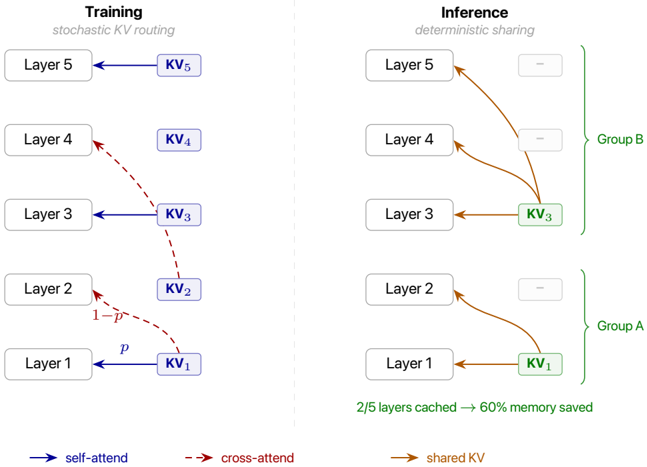
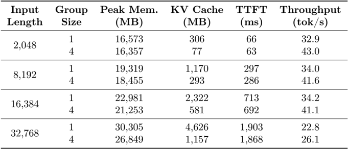
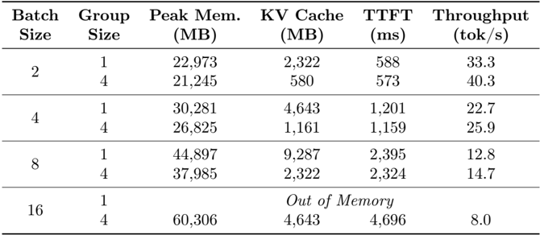
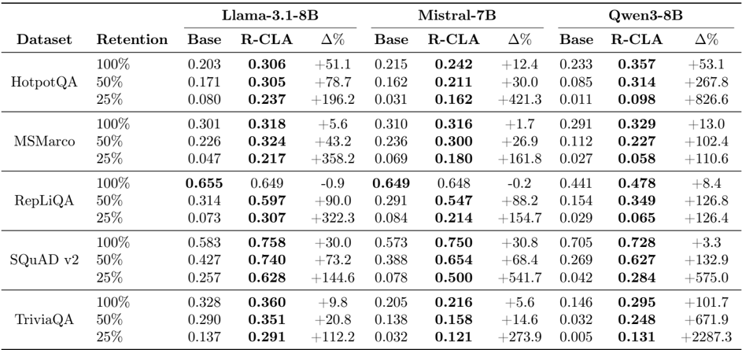
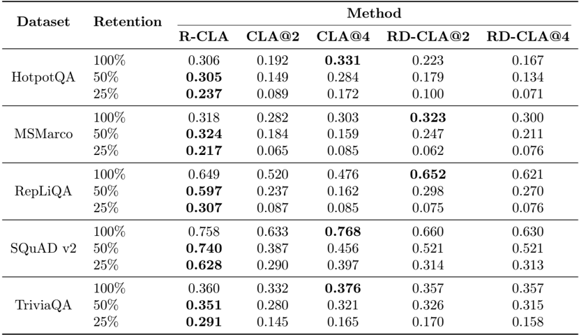

R-CLA 值得进入受控 serving 复测，但还不是上线结论
这篇论文的价值不在于宣布一种可立即上线的 KV cache 优化，而在于把 KV cache 压缩从 token、bit、head 三条常见轴之外，推进到 layer/depth 轴：训练时让层随机读取前层 KV，推理时固定组内共享 KV。对 serving 负责人来说，它最像一个需要复测的容量路线，而不是一个可以直接排期的工程方案。
R-CLA 值得复测，因为它打开的是 layer 轴容量空间
当前最稳妥的判断是“立项复测，不直接上线”：容量和 batch scaling 信号够强，但训练成本、TTFT/throughput 迁移和质量保持范围还没有覆盖真实生产环境。
论文提出 Random Cross-Layer Attention，简称 R-CLA。它不是在生成时动态删 token，也不是把已有 KV 改成更低 bit，而是让模型在训练或微调阶段习惯“某一层可能读不到自己的 KV、必须读前层 KV”的结构扰动。推理时，可以按 group size 固定共享：例如 g=4 时，每 4 个连续层共享一份 KV。
| 决策项 | 当前信号 | 不能越界的地方 | 建议 |
|---|---|---|---|
| 受控复测 | 8K 下 KV cache 约 4x 降幅；batch 16 baseline OOM 而 g=4 可运行；QA 表中低 retention 下 R-CLA 明显优于 Base。 | 这些实验不是我们的模型族、backend、scheduler、SLO 和混合优化栈。 | 可以进入小规模工程复测。 |
| 直接上线 | 论文没有证明生产多租户 serving、MoE、paged KV、CUDA graph、token eviction 或 KV quantization 叠加后的表现。 | R-CLA 需要训练或微调资源，无法当作只改推理配置的开关。 | 不建议直接进入上线排期。 |
KV cache 的瓶颈已经从计算复用变成显存容量与带宽压力
KV cache 随 batch size、sequence length 和 model depth 线性增长；长上下文场景里，它会同时压缩可用 batch、context 和 TTFT 预算。
论文用一个很适合工程听众的例子解释问题：token 原本只是 2-4 bytes 的整数，但进入 decoder 后，每层都要为每个 token 存 K/V 浮点张量；在 Llama-2-7B 中，单 token KV footprint 约 512 KB，Llama-3-8B 约 128 KB，Qwen3-8B 约 144 KB。GQA 已经降低了同层 KV head 数，但并没有改变“每层仍存 KV”的结构。
现有路线主要压 token、bit 或 head，R-CLA 切入的是层间冗余
这组比较说明 R-CLA 更像组合候选项：它不替代 token eviction 或 KV quantization，而是提出一个还没被 serving 团队充分验证的深度维度。
H2O / token eviction
- 一句话定位
- 按 recent tokens 与 heavy hitters 动态保留生成阶段 KV。
- 核心机制
- 利用 attention 访问模式保留高价值 token state，淘汰低价值 token state。
- 代表证据
- H2O 论文把方法定义为 efficient generative inference 的 KV cache eviction policy。5
- 适用边界
- token 重要性依赖查询；不直接减少每层 KV 的结构性重复。
- 与本文关系
- 正交，可组合，但组合后的质量损失、索引成本和重算成本需要测试。
KIVI / KV quantization
- 一句话定位
- 把 KV cache 低 bit 化，减少每个 KV state 的表示成本。
- 核心机制
- 对 Key 和 Value 采用非对称 2-bit quantization，目标是 tuning-free 接入。
- 代表证据
- KIVI 论文定位为无需微调的 asymmetric 2bit KV cache quantization。6
- 适用边界
- 保留原 token 与 layer 结构；低 bit 精度和 kernel 支持决定部署收益。
- 与本文关系
- 正交，可叠加；但叠加误差是否放大需要本地复测。
GQA / MQA
- 一句话定位
- 让多个 query heads 共享较少 KV heads，是现代模型常见结构优化。
- 核心机制
- GQA 使用介于 MHA 和 MQA 之间的 KV head 数；可从 MHA checkpoint uptraining。
- 代表证据
- GQA 论文提出用 5% 原始预训练 compute 做 uptraining，并让质量接近 MHA、速度接近 MQA。7
- 适用边界
- 它减少同层 KV heads，不解决跨 layer KV 重复。
- 与本文关系
- R-CLA 是在已有 GQA 口径之后继续压 depth 轴；Table 4 的 Qwen3-8B-like 已是 8 KV heads 条件。
CLA / deterministic layer sharing
- 一句话定位
- 让相邻层共享 KV，是 R-CLA 最接近的对照路线。
- 核心机制
- 固定层间共享关系；训练和推理 retention 不匹配时可能失稳。
- 代表证据
- R-CLA 的 Table 3 显示固定 CLA@k 跨 retention 档位时不如 R-CLA 稳定。8
- 适用边界
- 固定策略更像单一压缩点，缺少对未知硬件约束的适应性。
- 与本文关系
- R-CLA 可以理解为对 deterministic CLA 的鲁棒化训练方案。
| 路线 | 优化轴 | 是否改训练 | serving 风险 | 与 R-CLA 关系 |
|---|---|---|---|---|
| H2O / SnapKV / PyramidKV | token/time | 通常不必 | 动态选择、信息丢失、预填充峰值不一定下降 | 正交组合项 |
| KIVI / KVQuant | bit | 通常不必或较轻 | 低 bit 精度、kernel、误差叠加 | 正交组合项 |
| GQA / MQA | head | 取决于模型结构或 uptraining | 模型结构已固化时改造成本高 | R-CLA 可在其之后继续压 depth |
| R-CLA | layer/depth | 需要预训练或微调接入 | 质量迁移、训练成本、backend 指标未定 | 当前复测对象 |
随机训练换来推理期确定共享
R-CLA 的关键不是“推理时随机”，而是训练时随机暴露不同 cross-layer KV 来源，让模型在推理时能承受固定的共享策略。

容量信号强于上线证据，质量结论需要本地迁移验证
Table 4/5 足以支持容量方向复测，Table 2/3 足以说明低 retention 下 R-CLA 有质量优势；但这些还不能证明我们的服务栈会得到同样收益。




下一步应先做受控复测，而不是直接进入上线排期
建议把后续 deck 的主结论压成“可立项复测，不可直接上线”，并围绕三组门槛展开：质量迁移、训练成本、serving 指标。
建议复测矩阵：先选一个 Qwen-like 或内部 7B/8B 级别模型，比较 Base、R-CLA p=0.6、必要时再加 deterministic CLA@k；在 8K context 下测 g=2/g=4、batch 8/16、TTFT、decode throughput、peak memory、质量任务集和上线相关回归。
- 质量迁移：论文的强证据集中在 QA 数据集；内部任务、工具调用、多轮对话、检索增强输入可能有不同敏感点。
- 训练/微调成本：R-CLA 不是纯推理插件；Figure 7 还显示 fine-tuning train loss 更高、学习更慢。4
- serving 真实收益：Table 4/5 是单卡表格；需要在本地 backend 上验证 cache 管理、kernel、调度和监控链路。
- 组合路线：论文把 depth-wise sharing 与 temporal eviction、KV quantization 的组合留作未来工作；叠加路线不能先验假设收益相乘。
如果你批准这份理解，下一步我会进入 SCQA 和顶层总结页表达：只给 2-3 个 PPT-ready 候选，而不是直接写目录。
参考资料
- [T4] Stochastic KV Routing, Table 4: Inference efficiency across input lengths, page 11, local image `table_004.png`. ↩
- [T5] Stochastic KV Routing, Table 5: Batch size scaling at 8,192-token context, page 12, local image `table_005.png`. ↩
- [T2] Stochastic KV Routing, Table 2: Effect of R-CLA on F1 Score, page 9, local image `table_002.png`. ↩
- [S1] Stochastic KV Routing: Enabling Adaptive Depth-Wise Cache Sharing, arXiv:2604.22782v1, XML extraction package, sections Introduction, Method, Experiments, Limitations. ↩
- [R1] H2O: Heavy-Hitter Oracle for Efficient Generative Inference of Large Language Models, arXiv:2306.14048. ↩
- [R2] KIVI: A Tuning-Free Asymmetric 2bit Quantization for KV Cache, arXiv:2402.02750. ↩
- [R3] GQA: Training Generalized Multi-Query Transformer Models from Multi-Head Checkpoints, arXiv:2305.13245 / EMNLP 2023. ↩
- [T3] Stochastic KV Routing, Table 3: Ablations on top of Llama-3.1-8B, page 10, local image `table_003.png`. ↩
- [F4] Stochastic KV Routing, Figure 4: Behavior of a model implementing R-CLA, page 7, local image `picture_005.png`. ↩